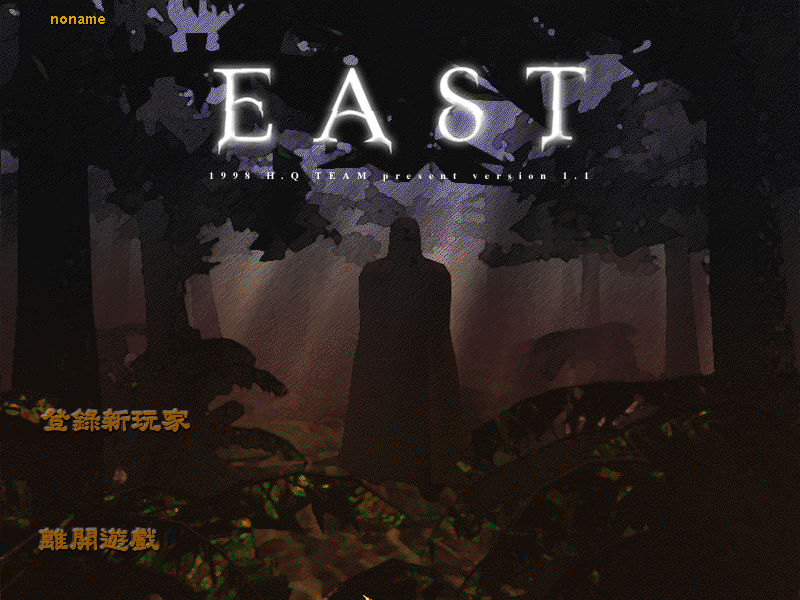
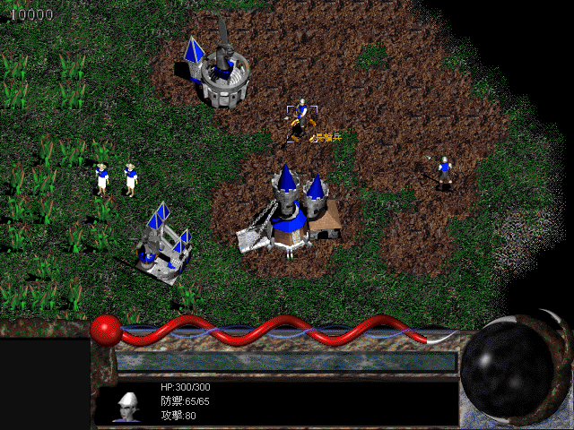

名稱：東方幻想戰記 (East，中文版) 簡介：HQ Team 1998年出品的即時戰略遊戲，1999年由遊戲橘子中文化並代理發行 [待補]。   保護：光碟，破解碼（放入光碟，進入戰場才有背景音樂）： EAST.EXE 75 4A A1 C8 EB -- -- -- 需將光碟\game目錄底下的CDANI、CDFNT、CDVOICE等目錄拷貝到安裝目錄。 備註：進入遊戲若顯示不正常，請執行dxdiag停用DirectDraw後再試看看。

